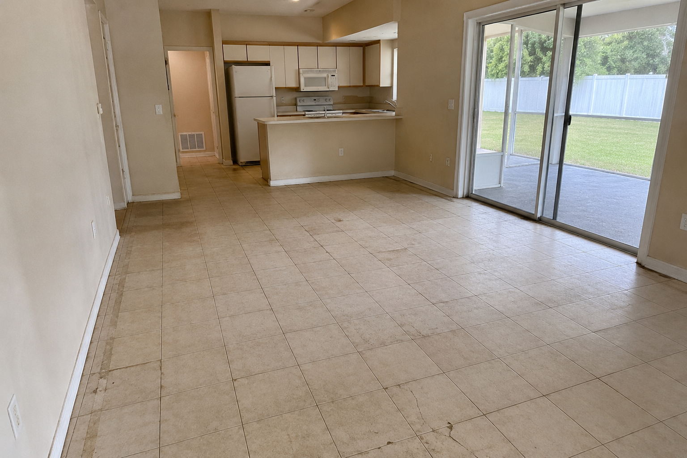
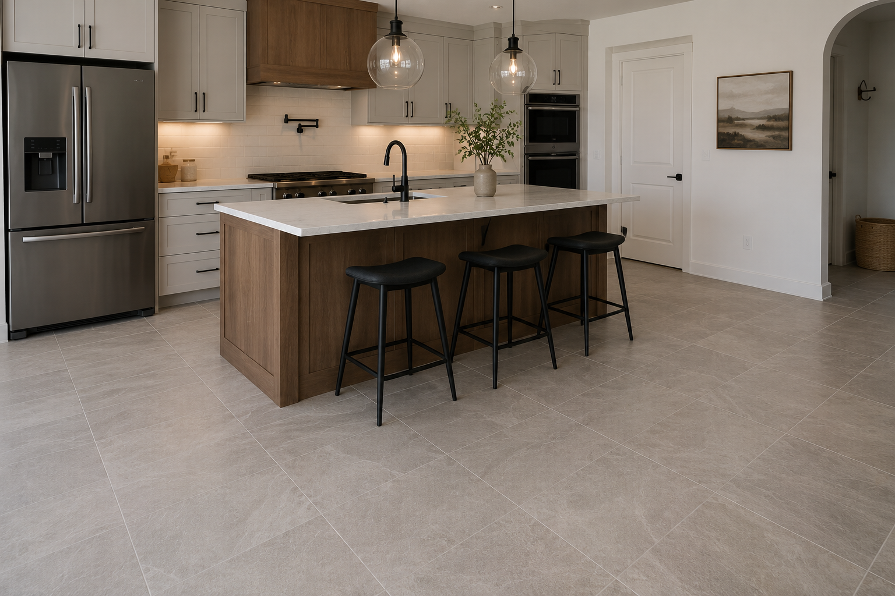
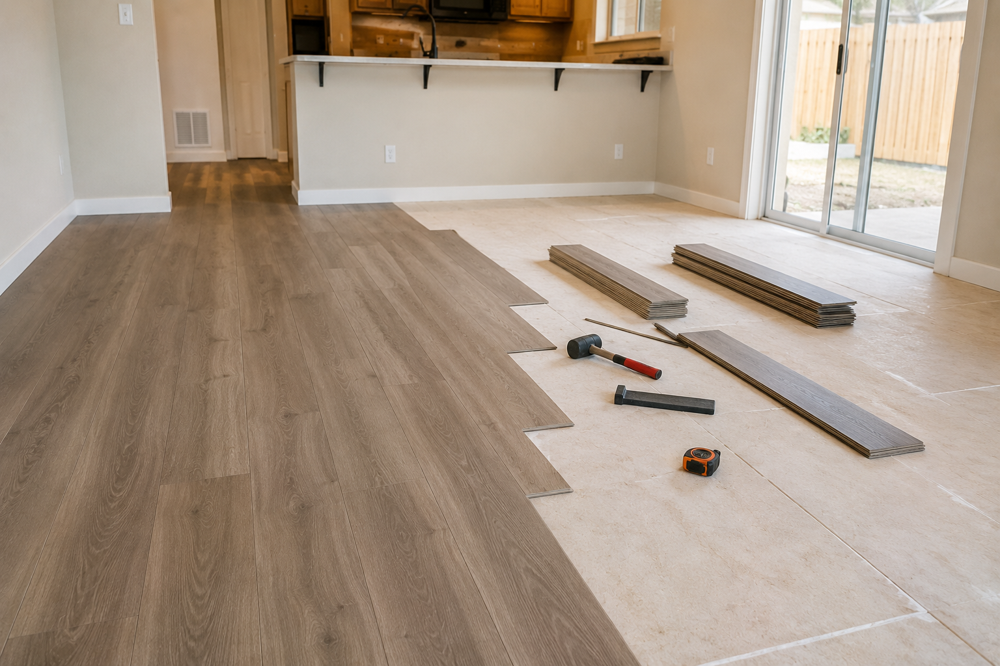
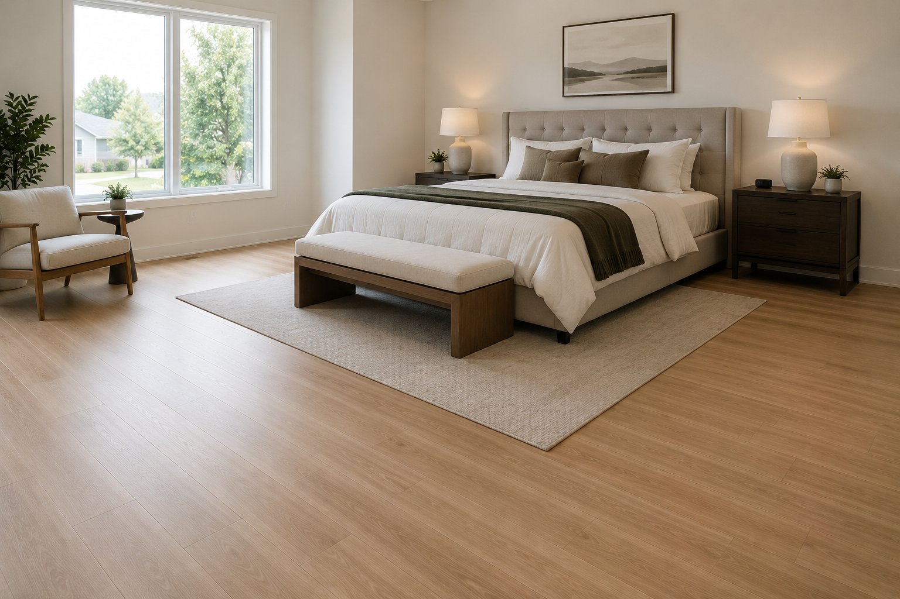
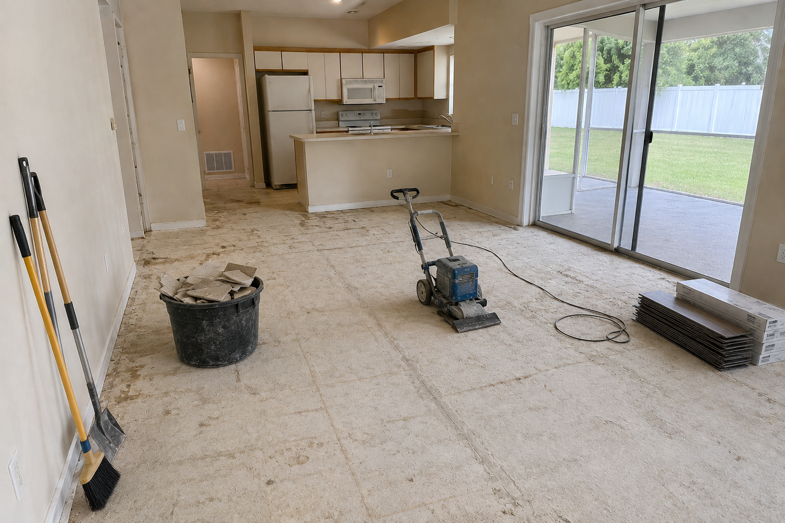
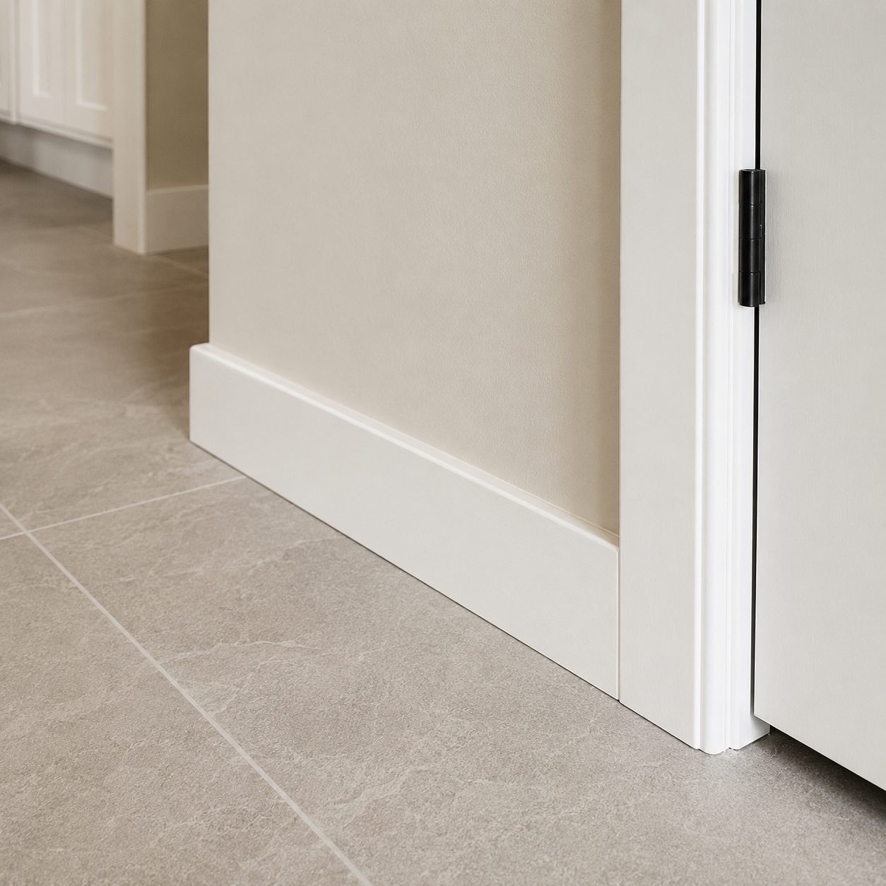
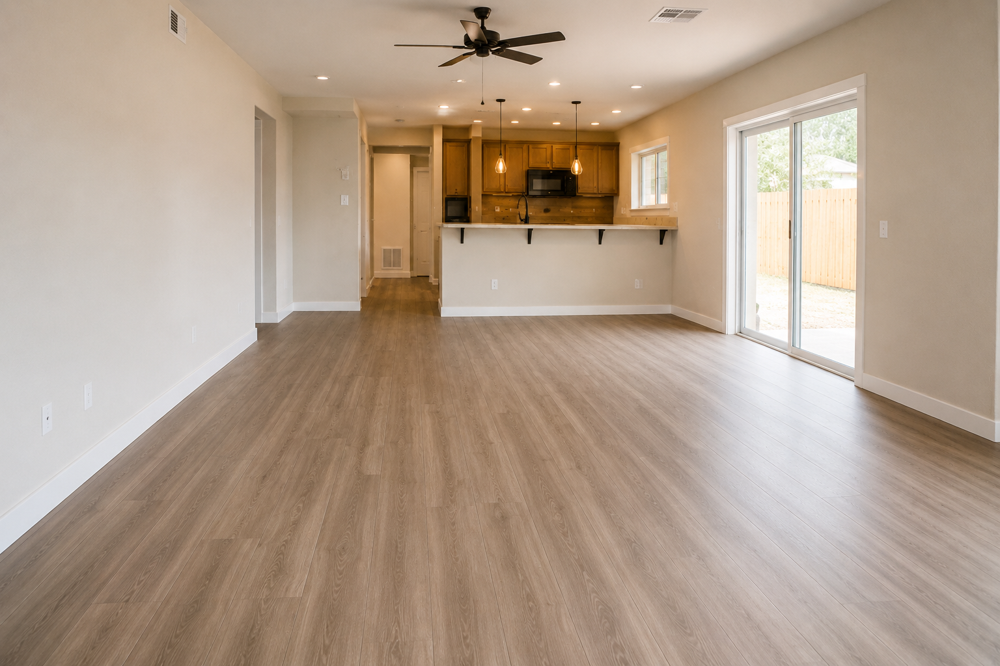

Blog / Flooring

Choosing the right flooring for a Florida home is different from choosing flooring in many other parts of the country. The warm climate, humidity, rain, sandy shoes, pets, and heavy everyday use can affect how well a floor performs over time.
A beautiful floor matters, but in Florida it also needs to be practical, durable, easy to maintain, and appropriate for the room. The wrong material can lead to difficult cleaning, faster wear, moisture problems, or regret after installation.
What to consider before choosing flooring
Before choosing flooring only by color or appearance, think about how the space will be used. A bathroom, kitchen, bedroom, rental property, and open living area may all need different flooring priorities.
- Does the area receive moisture, spills, or wet shoes?
- Is the room a bathroom, kitchen, bedroom, hallway, or living area?
- Do pets or kids use the space every day?
- Does the floor need to be very easy to clean?
- Is the goal comfort, durability, appearance, resale value, or easier maintenance?
- Is the home used as a primary residence, rental property, or property being prepared for sale?
In Florida, the best flooring choice usually balances moisture resistance, cleaning, durability, comfort, appearance, cost, and long-term maintenance.

Tile flooring
Tile is one of the most common flooring options in Florida because it is durable, water-resistant, and easy to clean. It works well in bathrooms, kitchens, laundry areas, entryways, and high-traffic rooms.
The main tradeoff is that tile can feel harder underfoot and grout may need maintenance over time. Installation quality also matters because uneven or poorly installed tile can create problems later.

Luxury vinyl plank
Luxury vinyl plank, often called LVP, is a popular choice for homeowners who want a wood-look floor with easier maintenance. It can be more comfortable than tile and can work well in living areas, bedrooms, hallways, and some kitchens depending on the product.
Not all vinyl plank is the same. Product quality, subfloor preparation, moisture conditions, and installation details all affect the final result. In Florida homes, choosing a durable and moisture-conscious product is important.

Thinking about new flooring?
Text WBNextlevel with your city, room photos, and the type of flooring look you want. Photos help us understand the current floor, room layout, transitions, and project scope.
Text 813-591-7560Laminate flooring
Laminate can be attractive and budget-friendly, but it needs to be chosen carefully in Florida. Not every laminate product handles humidity or water exposure well. It may be better for bedrooms, offices, and drier areas than bathrooms or moisture-prone spaces.
Engineered wood
Engineered wood can create a warmer and more premium feel, but it requires more consideration in a humid climate. It may work well in selected living areas or bedrooms, but it is usually not the most practical choice for wet areas like bathrooms.
Best flooring by room
Bathrooms
Bathrooms need flooring that handles water, steam, and frequent cleaning. Tile and other highly moisture-resistant options are usually practical choices.
Kitchens
Kitchens need flooring that handles spills, daily traffic, cleaning, and food preparation. Tile and high-quality luxury vinyl plank are common choices depending on the layout and homeowner preference.
Living areas
Living rooms and open spaces need a balance of comfort, appearance, scratch resistance, and easy cleaning. Luxury vinyl plank and tile are both common options in Florida homes.
Bedrooms
Bedrooms often prioritize comfort and visual warmth. Luxury vinyl plank, laminate in appropriate conditions, engineered wood, or carpet can be considered depending on lifestyle and maintenance expectations.

Rental properties
Rental properties usually need flooring that is durable, easy to clean, and easier to maintain between tenants. Tile and luxury vinyl plank are often practical options.
Why preparation matters before installation
Flooring installation is not only about placing new material on top of the old surface. The existing floor, subfloor, transitions, baseboards, moisture conditions, and room layout all need to be considered. Good preparation helps the new floor look better and last longer.

Common flooring mistakes in Florida
- Choosing flooring only by appearance
- Ignoring moisture exposure
- Skipping proper prep work before installation
- Not planning transitions between rooms
- Forgetting pets, kids, sand, and daily traffic
- Buying low-quality material that wears quickly
- Choosing a material that is hard to clean for the way the home is used

When is it worth replacing flooring?
Replacing flooring may be worth it when the existing floor is worn, cracked, outdated, hard to clean, damaged, stained, or no longer fits the style of the home. New flooring can also help when preparing a house for sale, improving a rental property, or updating a bathroom or kitchen remodel.
How the right flooring can improve home value
A well-chosen floor can change how the entire home feels. It can make the space look cleaner, brighter, more modern, more open, and easier to maintain. For buyers or renters, flooring often makes a strong first impression.

Helpful related pages
Learn more about our flooring services, bathroom remodeling, kitchen remodeling, and home improvement. WBNextlevel serves Tampa, Riverview, Brandon, Apollo Beach, Wesley Chapel, St. Petersburg, Clearwater, and nearby Tampa Bay communities.
Flooring FAQs
What is the best flooring for Florida homes?
It depends on the room and how the home is used. Tile and luxury vinyl plank are popular because they can handle moisture, cleaning, and daily traffic well.
Is tile better than luxury vinyl plank?
Not always. Tile is very durable and water-resistant. Luxury vinyl plank can feel warmer and more comfortable. The best choice depends on the room, budget, and maintenance expectations.
Can laminate flooring be used in Florida?
Yes, but carefully. Laminate is usually better for drier areas and should not be chosen blindly for moisture-prone rooms.
What flooring is best for bathrooms?
Tile and other highly moisture-resistant options are usually practical choices for bathrooms.
What flooring is good for pets?
Tile and high-quality luxury vinyl plank are popular options because they are easier to clean and can handle daily use.
Can I replace flooring in only one room?
Yes. Many flooring projects start with one room, then continue to other areas later.
Should I send photos before requesting an estimate?
Yes. Photos help show the current flooring, room layout, transitions, baseboards, and visible problem areas.
Planning a flooring project in Tampa Bay?
Text WBNextlevel at 813-591-7560 or request a free estimate online. Send photos of your current floor, your city, and the rooms you want to update.
Request EstimateText Us